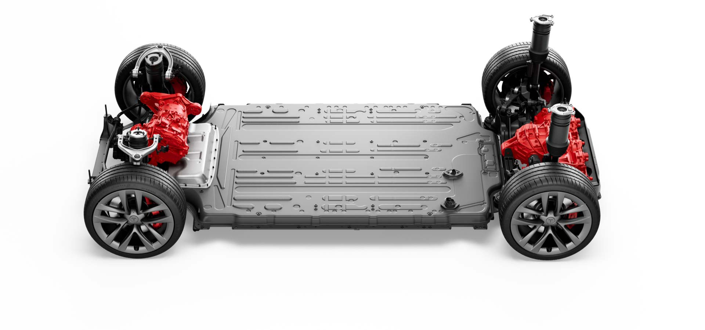

MODELO S
Aerodinámica optimizada
La atención al detalle en todas las superficies exteriores hace del Model S el auto de producción más aerodinámico del mundo.
Sistema de propulsión eléctrico
La nueva arquitectura térmica del módulo y el paquete de baterías permite una carga más rápida y le brinda más potencia y resistencia en todas las condiciones.

ESPECIFICACIONES TECNICAS